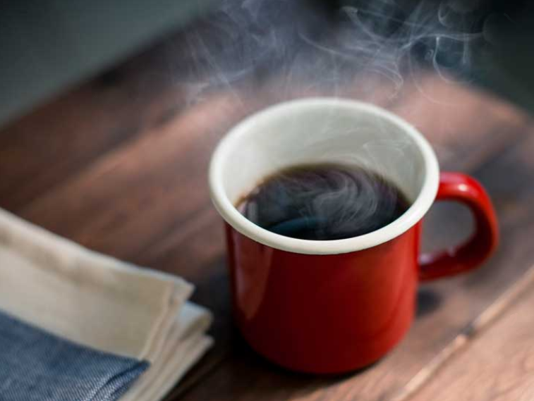

Café Tradicional
O café é uma bebida rica em ácido clorogênico, ácido cafeico e kahweol, que são compostos bioativos com propriedades antioxidantes, que ajudam a combater os radicais livres, prevenindo envelhecimento precoce, câncer, depressão e diabetes.
Além disso, o café tem ótimas quantidades de cafeína, um composto que estimula o sistema nervoso central, ajudando a combater a depressão, melhorando o humor e a disposição física e mental.
Ingredientes
- 3 xícaras de água
- 3 colheres (sopa) cheias de açúcar
- 3 colheres (sopa) de pó de café toko
- 1 filtro de papel
Modo de Preparo
- Em uma chaleira coloque a água e o açúcar.
- Em um suporte para filtro, coloque o filtro de papel e o pó.
- Quando ferver a água doce despejar sobre o pó, que passará pelo filtro caindo diretamente na garrafa ou bule. Sirva a seguir.